내가 기억하기로는 한섭 기준 1200k 밑으로 없어서 이게 최저투력일거임
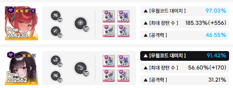
메인딜러 둘 스펙
글러트니는 크게 주목할건 없고 도발컨 타이밍들만 알면 됨
버스트는 크크마 크크마 크크마 크크마 크마
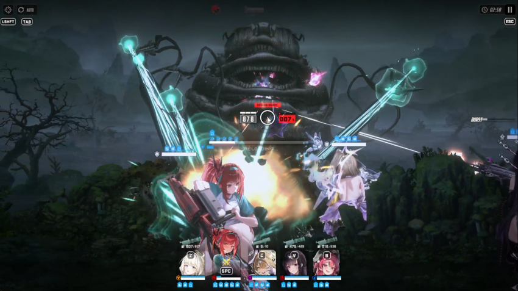
첫번째 레이저는 시작하고서 아니스 한방 쏘고 라피 엄폐하면 딱 맞음
이후 레이저는 전부 도발컨으로 막으면 됨
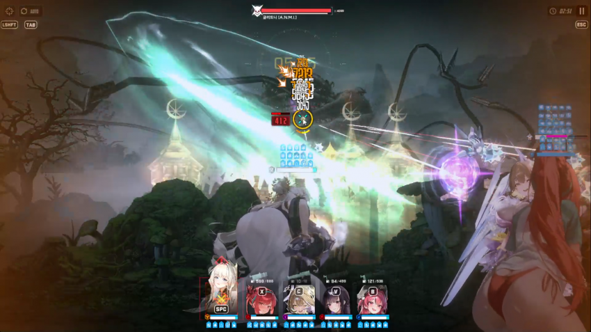
첫버스트 마스트 안쓰고 크라운 써서 할퀴기 막기
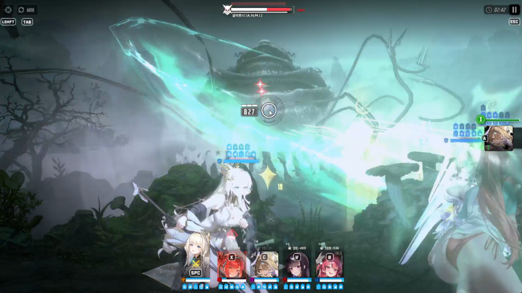
두번째 버스트는 그다음 할퀴기 날라온 다음 사용
이때 크라운 19스택 계속 유지 및 도발컨 준비
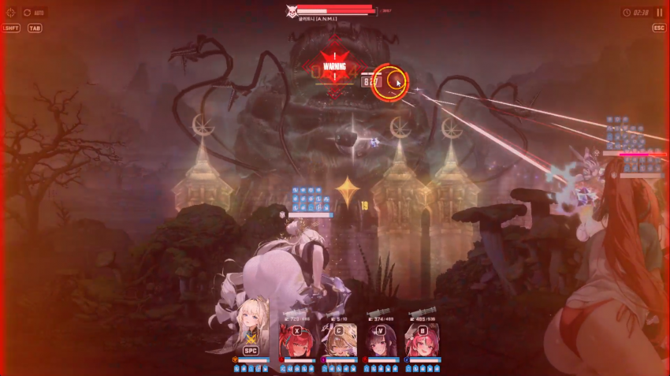
이때 애미하라 조합에서 미하라 쓰듯이 크라운으로 깔짝대면서 저지원에 에임 맞추기
저 첫 저지원 끝날때쯤에 도발 써주면 됨
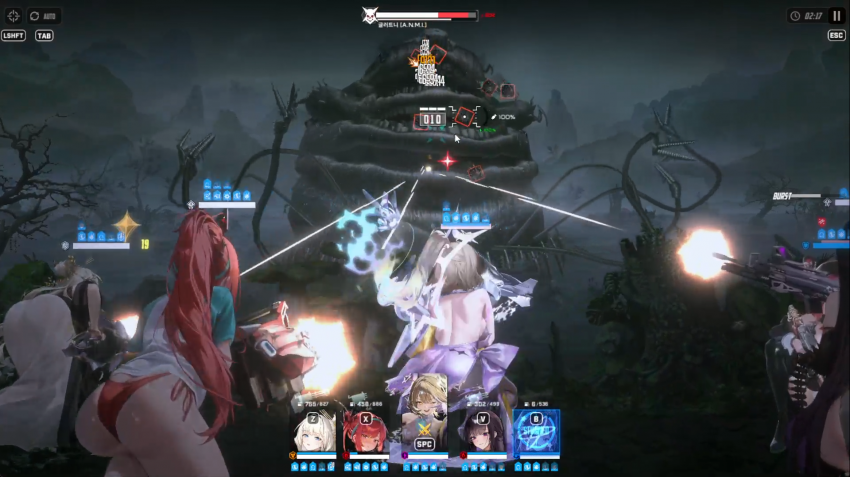
저 미사일들은 다 부숴야 함
하나라도 맞으면 죽음
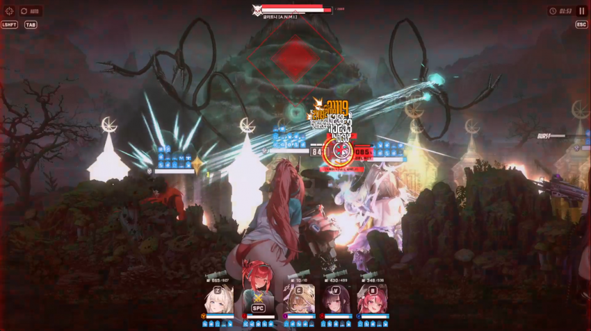
할퀴기 두번 이후 레이저 날라오니까 이때 맞춰서 크라운 도발컨 해줘야 함
이후에 풀버 켜면서 족자저지 돌입
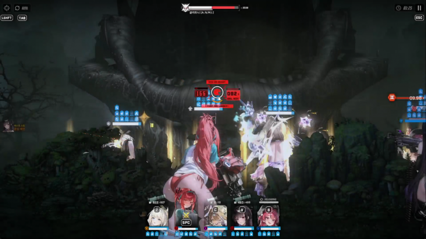
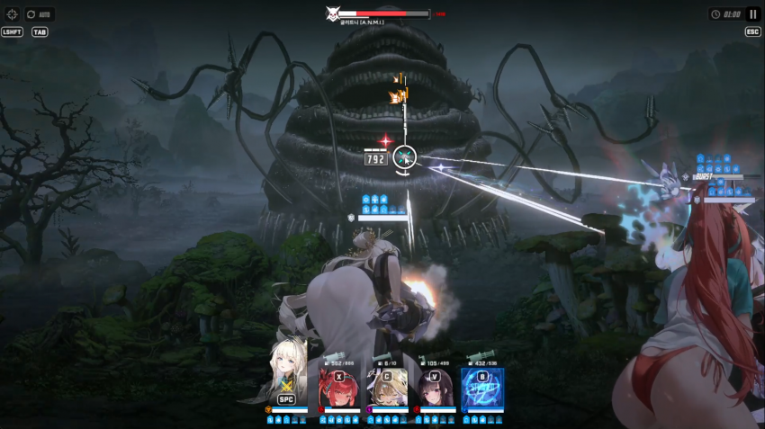
족자저지 끝나고 한번 더 레이저가 날라옴 이건 타이밍 모르겠으면 시간 보고 하셈
정확히 1분에 터뜨리면 타이밍 맞음
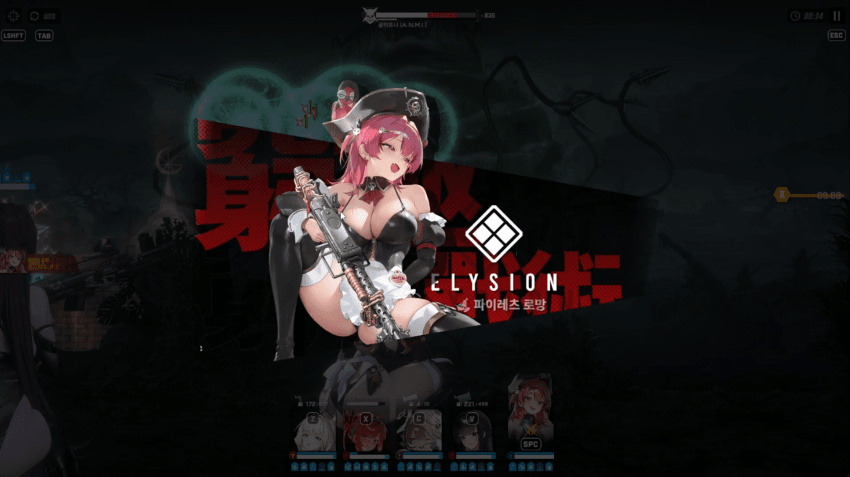
그리고 마지막 4번째 마스트 3스택 타이밍때 전체기 날라옴
이때 크라운이나 마스트가 할퀴기 맞는 세계선 찾아야 됨
그러고 나서 그 하나만 엄폐 해주기
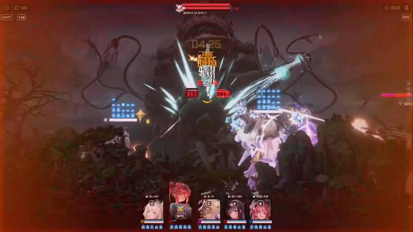
마지막 레이저는 3초인가 남았을때 날라옴
이때도 딜 부족하다 싶으면 라피 버스트때쯤에 다시 크라운 잡아서 도발컨 해줘야 함
나는 그냥 크리리트로 때웠음
마지막으로 영상 보면 저지원때는 계속 라피 잡고 있는걸 볼수 있음
그래야 비버스트때도 최대한 딜 넣을 수 있으니까 하면 좋음
글러트니는 그래도 도발컨만 신경쓰면 되니까 많이 할만할거임 다들 화이팅